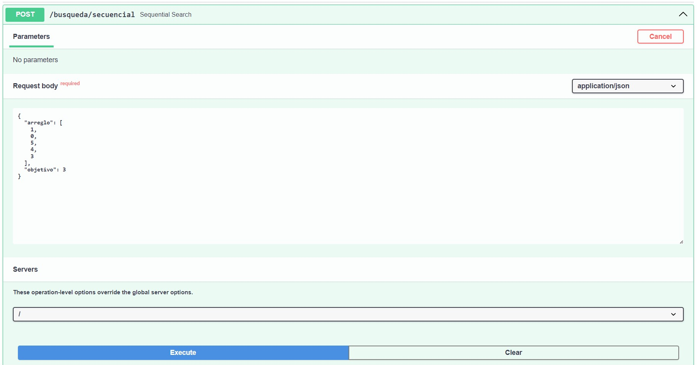

Introducción a FastAPI#
Ya que nos encontramos en la carpeta Mini-Back, vamos a entender FastAPI como un framework web moderno y rápido para crear APIs con Python 3.6+ (3.6 en adelante) basado en estándares abiertos y estándares de tipo de datos Python. Es fácil de aprender y usar, pero también es muy rápido y eficiente.
¿Qué es una API 🔀?
Una Interfaz para Programar Aplicaciones (Application Programming Interface — API) permite a dos o más aplicaciones (en uno o más dispositivos) comunicarse entre sí operando sobre una serie de datos y reglas. En el caso de una API web, se comunica a través de la red, permitiendo a las aplicaciones enviar y recibir datos en un formato específico, como JSON o XML.
Ahora, los endpoints son los puntos de acceso (URLs) a un servicio web que utilizan los clientes para intentar manipular los recursos de una API. Cada endpoint está asociado con una operación específica, como GET (Obtener información), POST (Añadir nueva información), PUT (Reemplazar una información guardada), o DELETE (Eliminar información de la API).
Con esto es importante entender las API’s generalmente (pero no siempre) manejan una base o fuente de datos que funcionen como memoria de la aplicación (permitiendo generar conceptos como la persistencia e integridad de datos, trazabilidad o auditoría y gestión como sistema de información).
Lo primero que debemos hacer es configurar correctamente nuestro entorno de desarrollo, esto aplica para cualquier desarrollo que se realice en Python.
Entorno virtual#
Opcionalmente se recomienda aprender a usar entornos virtuales en Python si queremos manejar las dependencias de nuestro proyecto de manera eficiente y sin afectar la instalación global de Python.
Configuración e Instalación
Un entorno virtual es un directorio que tiene como función aislar todas las librerías, módulos y dependencias para un proyecto en particular. Esto se hace porque cada proyecto puede tener diferentes versiones de las librerías y módulos, y a veces pueden ser incompatibles entre sí.
Para crear un entorno virtual, debemos instalar la librería virtualenv que nos permitirá crear un entorno virtual. Para ello, abrimos una terminal y ejecutamos el siguiente comando:
pip install virtualenv
Una vez instalado virtualenv, vamos a crear un entorno virtual en la carpeta Mini-Back. Para ello, ejecutamos el siguiente comando:
python -m venv .venv
Note
Si usamos ctrl + shift + p y escribimos Python: Create Environment, seleccionamos la opción Venv (Virtual Environment) y finalmente la versión de Python que deseemos.
El uso de -m es para especificar un módulo, en este caso venv que es el módulo que nos permite crear entornos virtuales y así no tomar otro módulo que se pueda llamar igual.
Este comando creará un directorio llamado .venv en la carpeta Mini-Back. No obstante debemos activar siempre el entorno virtual (se desactiva al cerrar el editor), ejecutamos el siguiente comando:
.venv\Scripts\activate
Podremos notar cómo en la terminal aparece el nombre del entorno virtual activo, en este caso (.venv). En caso se necesite desactivar el entorno virtual, se ejecuta el comando:
deactivate
Requerimientos#
En desarrollos colaborativos, es importante tener un archivo que contenga todas las librerías y módulos que se necesitan para ejecutar el proyecto. Para ello, vamos a crear un archivo llamado requirements.txt en la carpeta raíz (Mini-Back) y vamos a agregar las siguientes librerías:
fastapi
uvicorn
pydantic
python-dotenv
ruff
Note
En python 3.8+ se puede usar pip freeze > requirements.txt para habiendo ya instalado las dependencias, generar este archivo requirements.txt con todas las librerías instaladas en el entorno virtual.
Más sobre versionamiento!
Cuando defines las dependencias en tu archivo requirements.txt, puedes especificar las versiones de varias maneras para asegurar que tu proyecto use versiones compatibles de cada librería. Aquí te explico algunas opciones:
Versión exacta: Usarás exactamente la versión especificada.
fastapi==0.68.0
Esto significa que
fastapise instalará en la versión0.68.0.Mínima versión específica: Usarás al menos la versión especificada.
uvicorn>=0.15.0
Esto significa que
uvicornse instalará en la versión0.15.0o una versión más reciente.Máxima versión específica: No se instalarán versiones mayores que la especificada.
pydantic<1.8.2
Esto significa que
pydanticse instalará en una versión anterior a la1.8.2.Rango de versiones: Puedes combinar criterios para definir un rango de versiones permitidas.
uvicorn>=0.15.0,<=0.17.0
Esto significa que
uvicornse instalará en una versión entre la0.15.0y la0.17.0, inclusive.Versión compatible (tilde): Instala versiones compatibles con la especificada.
ruff~=0.1.0
Esto significa que
ruffse instalará en una versión compatible con la0.1.0. Generalmente, esto incluye cualquier versión que no cambie el primer número después del punto (por ejemplo,0.1.1,0.1.2, pero no0.2.0).
Ejemplo Completo
fastapi==0.68.0
uvicorn>=0.15.0,<=0.17.0
pydantic<1.8.2
python-dotenv>=0.19.0
ruff~=0.1.0
Si no especificamos la versión en las librerías, se instalará la última versión disponible. Es importante tener en cuenta que las versiones de las librerías pueden cambiar y esto puede afectar el funcionamiento de tu proyecto, por lo que es recomendable especificar las versiones de las librerías que se van a utilizar.
Warning
La instalación de Python en un entorno virtual está aislada de la instalación global. Esto significa que los paquetes instalados en el entorno virtual no afectarán otros proyectos generados que no usen dicho entorno.
Sabiendo que tenemos activado el entorno vitual, vamos a instalar las librerías y módulos necesarios para nuestro proyecto. Para ello, ejecutamos el siguiente comando:
python -m pip install -r requirements.txt
En este indicamos que ejecutaremos el módulo pip de Python para instalar mediante una acción de lectura (-r) las librerías y módulos que se encuentran definidas en el archivo requirements.txt.
Esperamos a que se instalen todas las librerías y módulos necesarios para nuestro proyecto.
FastAPI Web Framework#
FastAPI nos permite hacer desarrollos en la web usando Python, no obstante tiene dependencia de uvicorn para poder ejecutar el servidor. Para ello, vamos a crear un archivo llamado main.py en la carpeta raíz y vamos a agregar el siguiente código:
from fastapi import FastAPI
app: FastAPI = FastAPI(
title="Mini Backend | Mi Nombre.",
summary="Técnicas de programación, 2024B",
version="1.0.0",
)
@app.get("/")
def root() -> dict[str, str]:
return {"data": "Hello algorithms!"}
Directorio actual
Mini-Back
├── .venv/
├── main.py
└── requirements.txt
Para ver el resultado abrimos una terminal y ejecutamos el siguiente comando:
uvicorn main:app --reload
Note
El comando uvicorn nos permite ejecutar el servidor web, main:app indica que en el archivo main.py contiene el objeto o instancia de app FastAPI (el aplicativo) y --reload permite recargar el servidor cada vez que se realice un cambio al código.
De esta forma, cuando abramos un navegador y vayamos a la dirección indicada, cual por defecto es http://127.0.0.1:8000/, la previamente mencionada dirección IP de Localhost, donde lo que precede a los dos puntos es el puerto (8080).
Deberíamos ver el mensaje {"data": "Hello algorithms!"} en el navegador.
Note
Para detener el servidor, basta con presionar ctrl + c en la terminal.
Pero entonces, ¿Qué hemos hecho? Hemos creado un servidor web que nos devuelve un mensaje en formato JSON (JavaScript Object Notation), en este caso {"data": "Hello algorithms!"} es un diccionario con clave data y valor Hello algorithms!, pero se convierte en JSON en el proceso de respuesta de forma forzosa. Ahora, la dirección a la que accedemos después del puerto 8080 la hemos dejado en blanco en nuestro navegador, además, hemos definido que ante una petición de tipo GET a la dirección raíz /, se ejecute la función root, es por esto que nos devuelve el mensaje mencionado.
FastAPI nos permite hacer desarrollos web de manera rápida y eficiente, además de ser fácil de aprender y usar.
Warning
Es importante conocer el sitio de Endpoints de FastAPI, este es conocido como Swagger UI, el cual nos permite ver y probar los endpoints de nuestra API. Para acceder a él, vamos a la dirección http://localhost:8000/docs.
🎉 Felicidades 🎊 Has construído tu primer aplicativo FastAPI 🥳 De aquí en adelante vienen conceptos que darán una arquitectura sostenible y escalable a nuestro aplicativo.
Esquemas#
Vamos a generar un nuevo archivo llamado exec.py al lado de main.py y vamos a agregar el siguiente código:
import uvicorn
if __name__ == "__main__":
uvicorn.run(
app="main:app",
host="127.0.0.1",
port=8000,
reload=True,
)
En este definimos los parámetros sobre los que va a funcionar el servidor, en este caso iniciará el aplicativo en el archivo main.py con el objeto llamado app de tipo FastAPI en la dirección localhost y el puerto 8000, además de recargar el servidor cada vez que se realice un cambio en el código.
Ahora creamos dos folders, uno llamado routes y otro llamado schemas dentro de un folder llamado api, en el de rutas creamos un archivo llamado busqueda.py, su objetivo es contener los algoritmos de búsqueda vistos en el curso, acá se podrá entender la implementación de al menos uno de ellos, Sequential Search.
Directorio actual
Debería tener la siguiente estructura:
Mini-Back
├── .venv/
├── api/
│ ├── routes/
│ │ └── busqueda.py
│ └── schemas/
│ └── busqueda.py
├── main.py
├── exec.py
└── requirements.txt
Vamos a modificar sobre el esquema de busqueda.py para que contenga el siguiente código:
from pydantic import BaseModel, ConfigDict, Field
class SolicitudBusqueda(BaseModel):
arreglo: list[int] = Field(
...,
title="Arreglo de enteros",
description="Arreglo de enteros para buscar",
)
objetivo: int = Field(
...,
title="Objetivo",
description="Número a buscar en el arreglo de enteros",
)
model_config: ConfigDict = ConfigDict(
title="Solicitud de búsqueda",
description="Solicitud de búsqueda de un número en un arreglo",
populate_by_name=True,
json_schema_extra={
"example": {
"arreglo": [1, 0, 5, 4, 3],
"objetivo": 3,
}
},
)
En este definimos un esquema de tipo BaseModel (Usado para crear modelos Pydantic) que contiene un arreglo de enteros y un número objetivo. Todas las entradas en el cuerpo de datos se definirán con el objeto Field, este puede dejarse sólo como Field(...) pero por claridad se le ha añadido un título y una descripción, así mismo es importante definir los tipos de parámetros utilizados.
¿Cómo tipo en python?
Tipar en python es algo que siempre ha sido opcional, pero desde Python 3.5+ es posible tipar variables y funciones, esto con el fin de mejorar legibilidad y sobre todo, poder detectar errores o evitar infringir restricciones de nuestros datos.
La estructura es nombre_variable: tipo = valor, donde tipo es el tipo de dato que se espera y valor es el valor que se le asigna a la variable. En las funciones, se espera un tipo de dato de retorno, esto se define con -> tipo_retorno así mismo como los argumentos de la función parametro: tipo consecuentemente.
from typing import Callable
# Variables básicas
mi_numero: int = 5
mi_cadena: str = "Técnicas!"
mi_flotante: float = 3.1416
mi_booleano: bool = True
# Colecciones
mi_lista_entera: list[int] = [1, 2, 3, 4, 5]
mi_diccionario_flotante: dict[str, float] = {"pi": 3.1416, "e": 2.7182, "phi": 1.6180}
mi_conjunto_booleano: set[bool, bool] = {True, False}
mi_tupla_cadena: tuple[str, ...] = ("Hola", "Mundo")
# Funciones
def suma(a: int, b: int) -> int:
return a + b
# También se pueden tipar variables que contengan funciones
adicion: Callable[[int, int], int] = suma
resultado: int = adicion(5, 5)
# Así como se puede tipar con datos básicos, también se puede hacer con clases y funciones.
# Puedes probar a tipar colecciones más complejas como listas de diccionarios, diccionarios de listas, etc.
lista_de_diccionarios: list[dict[str, int]] = [{"a": 1, "b": 2}, {"c": 3, "b": 4}]
diccionario_de_listas: dict[str, list[int]] = {"a": [1, 2, 3], "b": [4, 5, 6]}
diccionario_de_diccionarios: dict[str, dict[str, int]] = {
"a": {"b": 1, "c": 2},
"d": {"e": 3, "f": 4},
}
conjunto_de_tuplas: set[tuple[str, int]] = {("a", 1), ("b", 2), ("c", 3)}
# Se recomienda aprender sobre los Diccionarios Tipados (TypedDict), una forma precisa para tipar diccionarios,
# delimitando lo que estos puedan recibir, evitando así errores o incertidumbres.
Error
Aunque se haga aplicación de un tipado a un objeto en python, una asignación indebida no generará error como en otros lenguajes, pero sí una advertencia que debemos atender.
Ahora, model_config no es un parámetro de entrada en de nuestra petición, sino que es un parámetro ajustable de BaseModel para ayudarnos a definir modelos, en este caso darle un título, descripción, permitir llenar los datos dándoselos a cada nombre pero, lo más importante, dar un ejemplo de cómo se vería la entrada de datos.
Añadimos ahora un esquema de respuesta en el mismo archivo busqueda.py dentro de la carpeta schemas:
class RespuestaBusqueda(BaseModel):
indice: int = Field(
...,
title="Índice",
description="Índice del número encontrado en el arreglo",
)
encontrado: bool = Field(
...,
title="Encontrado",
description="Indica si el número fue encontrado en el arreglo como True, si no, False",
)
Hemos definido cómo es que un Cliente deberá enviarnos los datos y con qué estructura, nosotros como Servidor responderemos a esa petición. Este proceso es fundamental para la comunicación entre ambos, ya que si no se respetan las estructuras, no se podrá realizar la comunicación.
Rutas#
Debemos tener en cuenta que no es recomendado el aplicar lógica de negocio en una ruta, para ello más adelante se separará en otro módulo llamado services, pero por ahora con fin meramente demostrativo pasaremos a la implementación de la Búsqueda Secuencial en el archivo busqueda.py dentro de la carpeta routes:
Primero creamos el router, este contendrá todos los endpoints o puntos de acceso al dispositivo o Cliente que lo solicite. En este caso, vamos a definir un solo endpoint que será de tipo POST y que recibirá un objeto de tipo SolicitudBusqueda y devolverá un objeto de tipo RespuestaBusqueda.
from fastapi import APIRouter, status
from api.schemas.busqueda import SolicitudBusqueda, RespuestaBusqueda
router = APIRouter()
@router.post(
"/secuencial",
status_code=status.HTTP_200_OK,
response_model=RespuestaBusqueda,
)
def sequential_search(dto: SolicitudBusqueda):
# Algoritmo aquí! #
return RespuestaBusqueda(
indice=-1,
encontrado=False,
)
Debemos modificar el archivo main.py para que importe las rutas que vamos a definir en el archivo busqueda.py, además de importar las librerías necesarias para poder hacer uso de FastAPI. Para esto haremos uso de la función include_router que nos permite incluir las rutas definidas en un archivo en particular.
from fastapi import FastAPI
app: FastAPI = FastAPI(
title="Mini Backend | Mi Nombre.",
summary="Técnicas de programación, 2024B",
version="1.0.0",
)
app.include_router(busqueda.router, prefix="/busqueda", tags=["Búsqueda"])
@app.get("/")
def root() -> dict[str, str]:
return {"data": "Hello algorithms!"}
Finalmente hacemos ejecución de nuestro archivo exec.py y accedemos a la sección de docs.
python exec.py
Ya no necesitamos ejecutar uvicorn directamente, ya que exec.py esta delegado como inicio del aplicativo, de forma que ejecuta app desde main el cual a su vez carga todas las rutas (incluídas) en vuestro navegador. El flujo finalmente termina cuando la ruta devuelve el objeto respuesta para que podamos verlo en el navegador.
Análisis de Búsqueda Secuencial#
La búsqueda secuencial o lineal es un algoritmo donde dado un arreglo desordenado o no de elementos distintos, valida la existencia de un elemento dado por el usuario (la precondición), si está devuelve el índice en el que se encuentre, si no, devuelve -1 (la postcondición). Este algoritmo es de complejidad computacional temporal \(T(n)\in O(n)\) (lineal), es decir, su tiempo de ejecución es proporcional al tamaño del arreglo. en el peor escenario.
Note
El argumento dto es una abreviación de Data Transfer Object, es una forma de referirse a un objeto que se utiliza para transferir datos entre subsistemas de una aplicación. En este caso, dto es el objeto que recibe la petición del Cliente y es el objeto que se envía como respuesta al Cliente.
Se manejará la siguiente entrada de datos: 
def sequential_search(dto: SolicitudBusqueda) -> RespuestaBusqueda:
indice_sin_encontrar: int = -1
for indice, entero in enumerate(dto.arreglo): # (idx, elem) <- enumerate(colection)
if entero == dto.objetivo:
return RespuestaBusqueda(
indice=indice,
encontrado=True,
)
return RespuestaBusqueda(
indice=indice_sin_encontrar,
encontrado=False,
)
Para la resolución del problema haremos uso de un ciclo for-each simultáneo a uno for-i, en Python existe la función enumerate que nos permite recorrer una colección asociando un indice a cada elemento, nos devuelve una tupla donde primero obtenemos el índice y luego el elemento.
En cada iteración comparamos si el elemento es igual al buscado, si es así podemos devolver el índice e indicar que se ha encontrado con True, caso contrario a no encontrarlo, devolvemos -1 e indicamos que no se ha encontrado con False.
Note
El uso de enumerate es muy común en Python, pero no es la única función que permite recorrer una colección de una forma especializada, podemos también hacer uso de zip, map, filter, entre otras. Se invita fuertemente a investigar sobre estas funciones y sus aplicaciones al iterar colecciones en Python.
🎉 Enhorabuena 🎊 Has hecho tu primera lógica en el Framework de FastAPI 🥳 Con esto tienes lo necesario para practicar aún más y explorar las distintas formas de manejar entradas de datos, definir esquemas y crear múltiples niveles de lógica en un aplicativo ¡Nos vemos hasta la próxima!